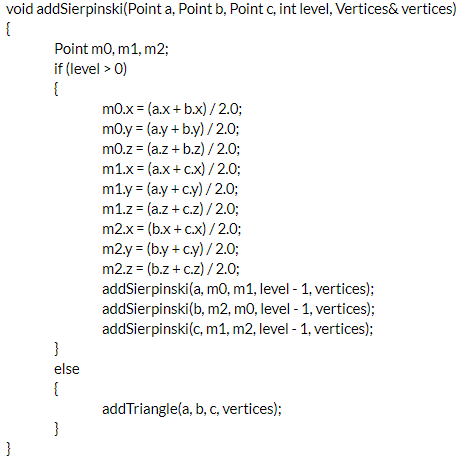
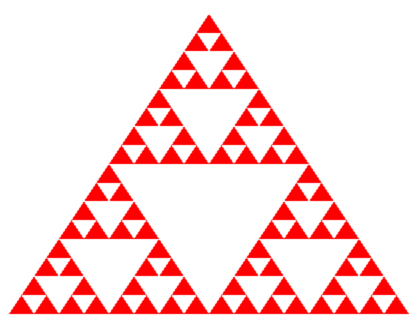
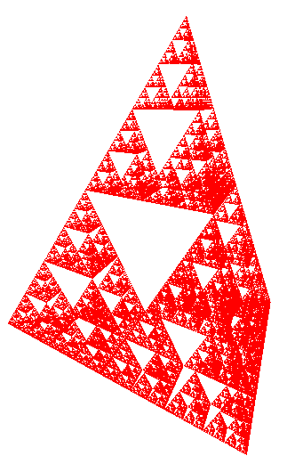

Simple Intuitive Explanation on how to Render a Sierpinski Triangle with OpenGL
While learning OpenGL over at learnopengl.com, I came across the following images in the comment section.
The form these figures take is called a sierpinski triangle, and I thought about how I could recreate them. Clearly a simple recursion algorithm was at work.
How to draw a Sierpinski triangle
It’s a fractal (duh) and to complete an iteration, we must basically replace every triangle with a triforce version of itself.
Mathematically, this is equivalent to using the midpoint of each side as the vertices of a new triangle. This leaves us with three triangles, each being a quarter of the area of the original.
OpenGL in a Nutshell
The process of using OpenGL can be summarized as follows:
First, you create an array of 3d vertex data you will use to render a bunch of triangles later on. That data will then be sent to the GPU and run through a pipeline of small, sometimes customizable programs called “shaders”. These programs figure out how to translate the input vertex data into the position and color of the pixels on your screen.
The two main levers developers can pull are:
- The vertex data we send in
- The code used to run the shaders
In this case we can safely use standard shaders and focus on the vertex data.
The Recursive Function
Our goal is to create a function where given the three corners of a triangle and the amount of iteration we wish to perform, it will output an array containing the mesh of triangles that form the fractal.
But first - let’s set up some classes to simplify our job. I will set up a Point class (with member values x, y and z) and I will also set up a vertex class that will be used as an interface to safely manipulate the final vertex data, with a function addTriangle that will take care of adding a single triangle to the mesh.
Using these classes, we can implement a recursive function addSierpinski, with the following logic:
We effectively add the mathematical implementation of the sierpinski triangle, followed by some additional logic that allows us to input the amount of recursions we wish to be performed.
Final Result
Edit 1
Refactored Sierpinski function to be 3D
